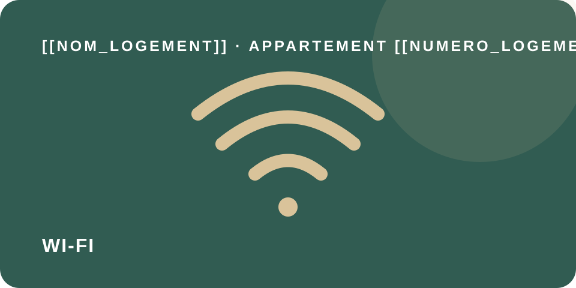
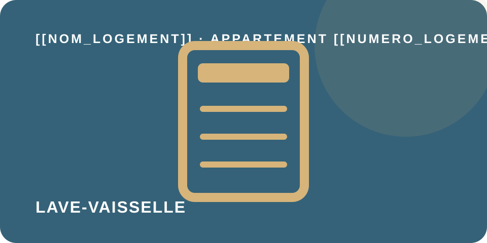
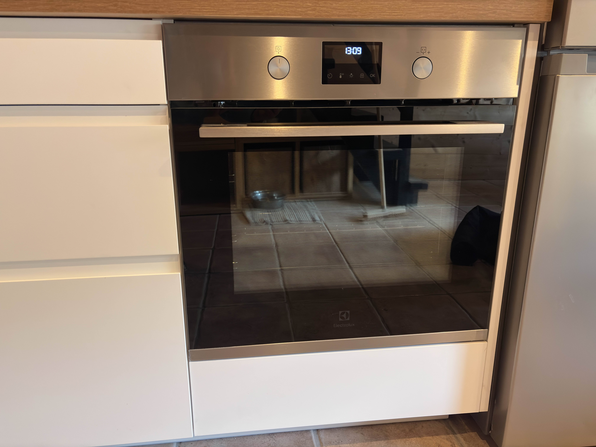
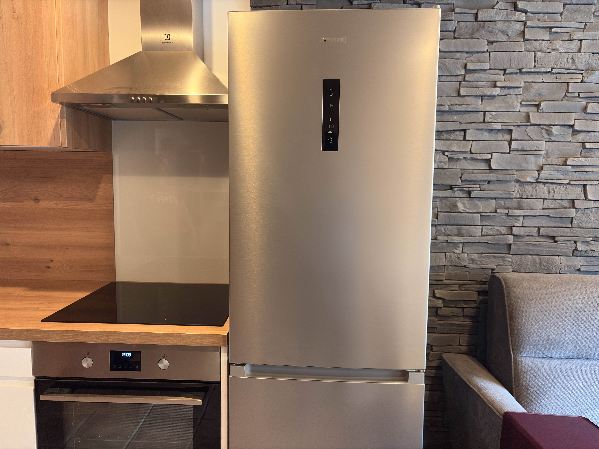
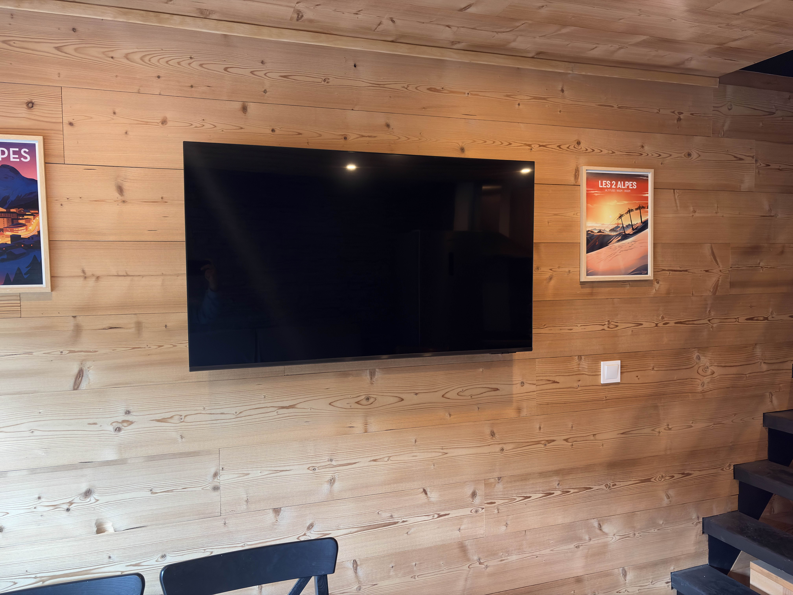
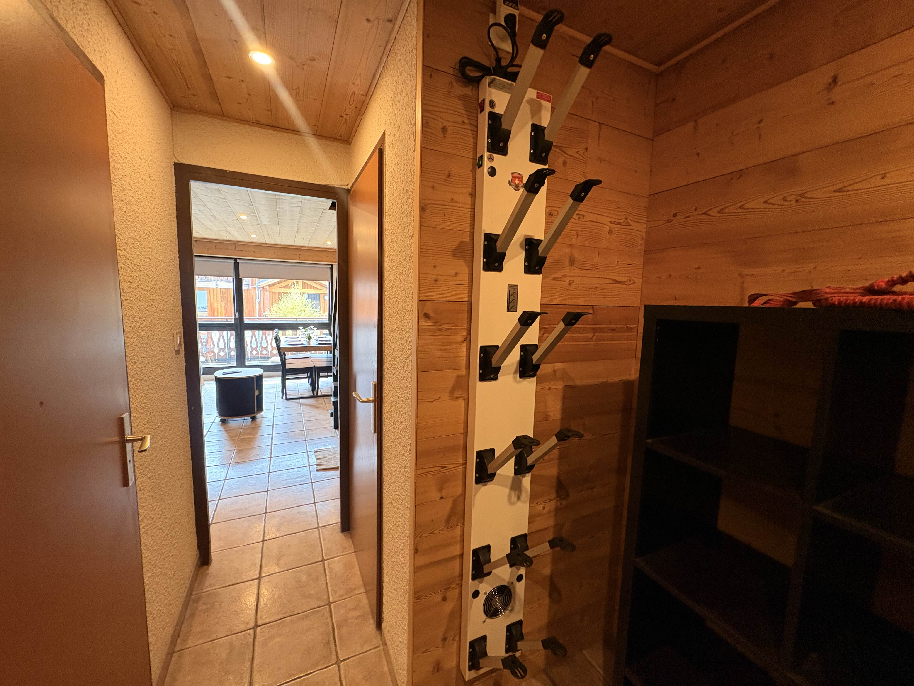
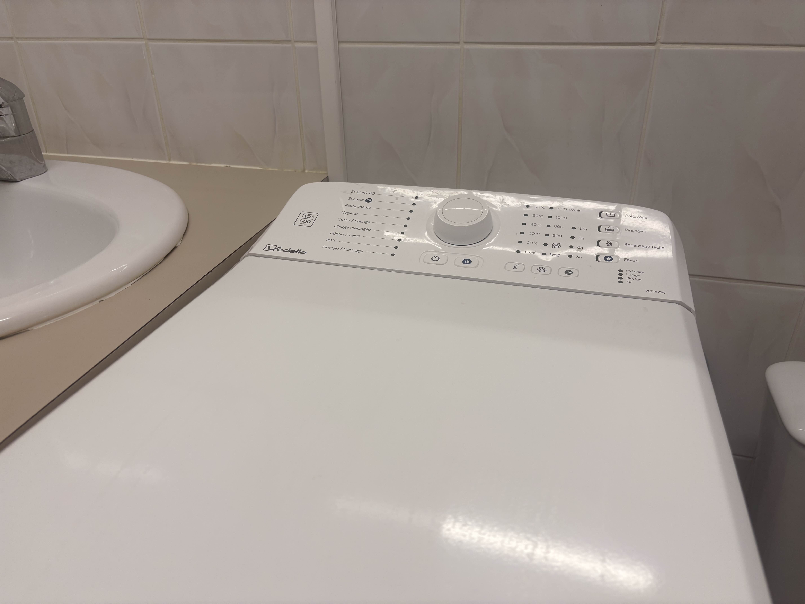
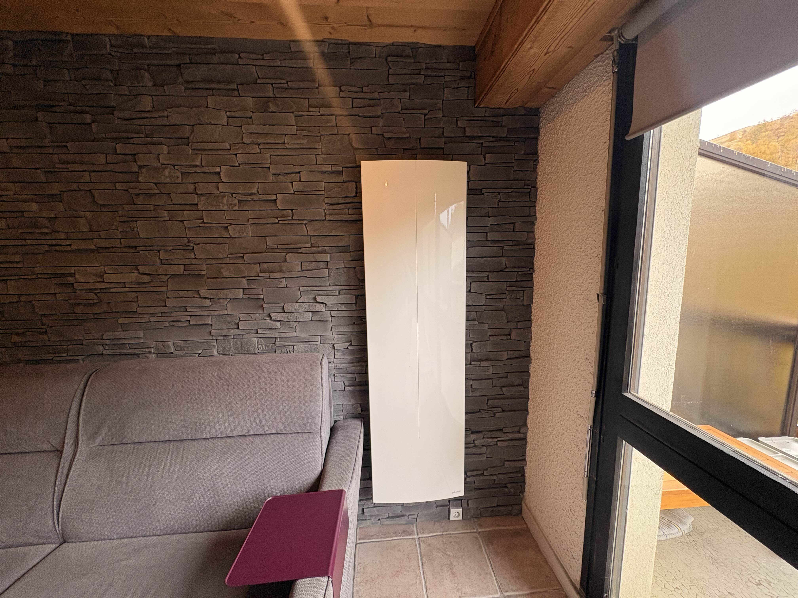

Au niveau des garages
Le placard se trouve au niveau des garages. Fermez-le après chaque usage.
Le placard à skis se trouve au niveau des garages. Fermez-le bien après chaque usage.
[[NOM_LOGEMENT]] · [[NOM_STATION]]
Choisissez la langue du site.
Votre séjour
Arrivée, appareils, règles et conseils pratiques.
Mot de bienvenue
Bienvenue aux [[NOM_STATION]] ! Nous sommes heureux de vous accueillir. Profitez de la neige et des activités d’hiver.
Bienvenue aux [[NOM_STATION]] ! Nous sommes heureux de vous accueillir. Profitez des balades et de la montagne.
Ce guide rassemble les informations utiles pour votre séjour : appareils, règles et conseils pratiques.
Une question ? Contactez la conciergerie ou écrivez-nous.
Nous vous souhaitons un excellent séjour aux [[NOM_STATION]] !
Chaleureusement, [[NOM_HOTES]]
Arrivée
Suivez ces quatre étapes pour vous installer.
Vérifiez la route avant de partir. En hiver, prévoyez des pneus neige ou des chaînes. Pour l’accès ou l’heure d’arrivée, écrivez-nous.
La route de montagne est sinueuse. Prévoyez assez de temps pour monter. Pour l’accès ou l’heure d’arrivée, écrivez-nous.
Les conteneurs (moloks) sont à l’entrée de la résidence, près de la barrière.
Le placard à skis se trouve au niveau des garages. Fermez-le bien après chaque usage.
Le placard à skis se trouve au niveau des garages. Fermez-le bien après chaque usage.
Infos Wi-Fi en haut de page. Scannez le QR code dans l’appartement. Consultez le guide des appareils ci-dessous.
À l’arrivée
Cochez ces points à votre arrivée.
0 sur 5 faits
Placard à skis au niveau du garage
Rangement des skis
Le placard se trouve au niveau des garages. Fermez-le après chaque usage.
Le placard à skis se trouve au niveau des garages. Fermez-le bien après chaque usage.
Rangez vos skis dans le placard, au niveau des garages.
Rangez votre matériel dans le placard, au niveau des garages.
Fermez bien le placard après chaque usage.
Équipements
Choisissez un appareil et suivez les étapes.



Mode de cuisson, bouton de gauche :

Les températures sont déjà réglées. Ne les modifiez pas.




Copropriété et bonnes manières
Inventaire
Retrouvez les équipements, pièce par pièce.
Signalez rapidement toute casse ou tout objet manquant à la conciergerie ou aux propriétaires.
Assistance
Décrivez le problème. Configurez une destination d’envoi avant la livraison.
Votre avis
Partagez votre avis avec les prochains voyageurs.
Choisissez une catégorie, donnez une note et ajoutez un commentaire.
FAQ
Le réseau et le mot de passe sont en haut de la page. Vous pouvez aussi scanner le QR code dans l’appartement.
Dans le local au niveau des garages. Fermez le placard après usage.
Utilisez le placard du garage pour votre matériel. Fermez-le après usage. Besoin de plus de place ? Écrivez-nous.
Comptez 2 à 3 h après le ski. Heures creuses : 1 h 10–6 h 40 ou 14 h 40–17 h 10. Ne changez pas la minuterie.
Lancez-le quand vous voulez. Heures creuses : 14 h 40–17 h 10 ou 1 h 10–6 h 40. Programme : P1 Eco.
Oui, les petits et moyens chiens sont acceptés. Ils ne doivent pas monter sur les lits ni les canapés.
Dans les moloks à l’entrée de la résidence, près de la barrière. Videz les poubelles avant votre départ.
Non, le ménage est compris. Laissez l’appartement en bon état et videz les poubelles.
Prévenez rapidement la conciergerie ou les propriétaires par message.
Du 1er novembre au 31 mars, les pneus hiver ou les chaînes sont obligatoires. Vérifiez la route avant de partir.
Contactez la conciergerie ([[NOM_CONCIERGERIE]]) ou les propriétaires, [[NOM_HOTES]], par e-mail. En urgence, appelez un numéro en bas de page.
Départ
Le ménage est compris. Cochez ces gestes avant votre départ.
0 sur 5 faits